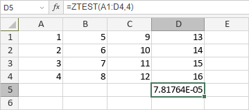

ZTEST funkcija
Funkcija ZTEST je jedna od statističkih funkcija. Koristi se za vraćanje P-vrednosti sa jednom repom za Z-test. Za zadatu hipotetičku populacionu srednju vrednost, μ0, ZTEST vraća verovatnoću da bi srednja vrednost uzorka bila veća od proseka posmatranih vrednosti u skupu podataka (nizu) — odnosno, posmatrana srednja vrednost uzorka.
Sintaksa
ZTEST(array, x, [sigma])
Funkcija ZTEST ima sledeće argumente:
| Argument | Opis |
|---|---|
| array | Opseg numeričkih vrednosti protiv kojih se testira x. |
| x | Vrednost koja se testira. |
| sigma | Standardna devijacija populacije. Opcioni argument. Ako nije naveden, koristi se standardna devijacija uzorka. |
Napomene
Kako primeniti ZTEST funkciju.
Primeri
Na slici ispod prikazan je rezultat koji vraća ZTEST funkcija.
